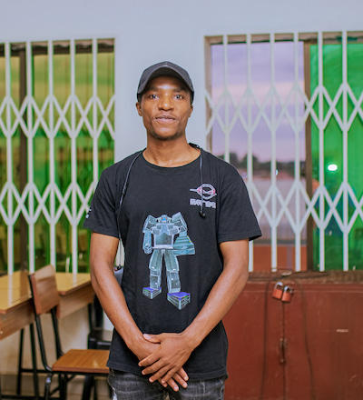

Peter Msamba | WDD 130
Hi, My name is Peter Msamba. I am currently a student at BYU-Worldwide, pursing software develpment. am from Malawi, the warm heart of Africa. i am passionate about coding and applied physics. my favorite food in Masara chips with fanta orange. my favorite place to visit is United States of America.